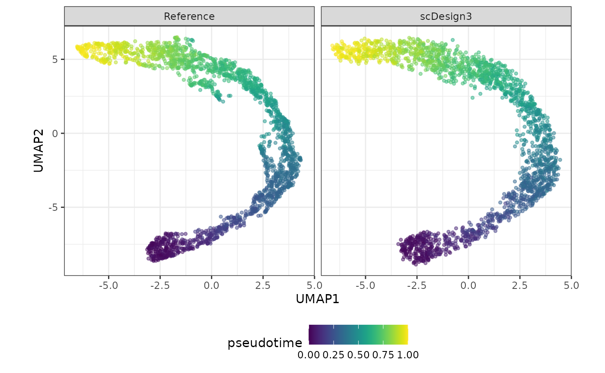

scDesign3 Quickstart
Dongyuan Song
Bioinformatics IDP, University of California, Los Angelesdongyuansong@ucla.edu
Qingyang Wang
Department of Statistics, University of California, Los Angelesqw802@g.ucla.edu
25 January 2025
Source:vignettes/scDesign3.Rmd
scDesign3.RmdIntroduction
scDesign3 is a unified probabilistic framework that generates realistic in silico high-dimensional single-cell omics data of various cell states, including discrete cell types, continuous trajectories, and spatial locations by learning from real datasets. Since the functions of scDesign3 is very comprehensive, here we only introduce how scDesign3 simulates an scRNA-seq dataset with one continuous developmental trajectory. For more information, please check the Articles on our website: (https://songdongyuan1994.github.io/scDesign3/docs/index.html).
Read in the reference data
The raw data is from the scvelo, which describes pancreatic endocrinogenesis. We pre-select the top 1000 highly variable genes and filter out some cell types to ensure a single trajectory.
example_sce <- readRDS((url("https://figshare.com/ndownloader/files/40581992")))
print(example_sce)
#> class: SingleCellExperiment
#> dim: 1000 2087
#> metadata(5): clusters_coarse_colors clusters_colors day_colors
#> neighbors pca
#> assays(6): X spliced ... cpm logcounts
#> rownames(1000): Pyy Iapp ... Eya2 Kif21a
#> rowData names(1): highly_variable_genes
#> colnames(2087): AAACCTGAGAGGGATA AAACCTGGTAAGTGGC ... TTTGTCAAGTGACATA
#> TTTGTCAAGTGTGGCA
#> colData names(7): clusters_coarse clusters ... sizeFactor pseudotime
#> reducedDimNames(4): X_pca X_umap PCA UMAP
#> mainExpName: NULL
#> altExpNames(0):To save computational time, we only use the top 100 genes.
example_sce <- example_sce[1:100, ]Simulation
The function scdesign3() takes in a
SinglecellExperiment object with the cell covariates (such
as cell types, pseudotime, or spatial coordinates) stored in the
colData of the SinglecellExperiment
object.
set.seed(123)
example_simu <- scdesign3(
sce = example_sce,
assay_use = "counts",
celltype = "cell_type",
pseudotime = "pseudotime",
spatial = NULL,
other_covariates = NULL,
mu_formula = "s(pseudotime, k = 10, bs = 'cr')",
sigma_formula = "1", # If you want your dispersion also varies along pseudotime, use "s(pseudotime, k = 5, bs = 'cr')"
family_use = "nb",
n_cores = 2,
usebam = FALSE,
corr_formula = "1",
copula = "gaussian",
DT = TRUE,
pseudo_obs = FALSE,
return_model = FALSE,
nonzerovar = FALSE
)The output of scdesign3() is a list which includes:
-
new_count: This is the synthetic count matrix generated byscdesign3(). -
new_covariate:- If the parameter
ncellis set to a number that is different from the number of cells in the input data, this will be a matrix that has the new cell covariates that are used for generating new data. - If the parameter
ncellis the default value, this will beNULL.
- If the parameter
-
model_aic: This is a vector include the genes’ marginal models’ AIC, fitted copula’s AIC, and total AIC, which is the sum of the previous two AIC. -
model_bic: This is a vector include the genes’ marginal models’ BIC, fitted copula’s BIC, and total BIC, which is the sum of the previous two BIC. -
marginal_list:- If the parameter
return_modelis set toTRUE, this will be a list which contains the fitted gam or gamlss model for all genes in the input data. - If the parameter
return_modelis set to the default valueFALSE, this will beNULL.
- If the parameter
-
corr_list:- If the parameter
return_modelis set toTRUE, this will be a list which contains the either a correlation matrix (whencopula = "gaussian") or the fitted vine copula (whencopula = "vine) for each user specified correlation groups (based on the parametercorr_by). - If the parameter
return_modelis set to the default valueFALSE, this will beNULL.
- If the parameter
In this example, since we did not change the parameter
ncell, the synthetic count matrix will have the same
dimension as the input count matrix.
dim(example_simu$new_count)
#> [1] 100 2087Then, we can create the SinglecellExperiment object
using the synthetic count matrix and store the logcounts to
the input and synthetic SinglecellExperiment objects.
Visualization
set.seed(123)
compare_figure <- plot_reduceddim(ref_sce = example_sce,
sce_list = list(simu_sce),
name_vec = c("Reference", "scDesign3"),
assay_use = "logcounts",
if_plot = TRUE,
color_by = "pseudotime",
n_pc = 20)
plot(compare_figure$p_umap)
Session information
sessionInfo()
#> R version 4.4.2 (2024-10-31)
#> Platform: x86_64-pc-linux-gnu
#> Running under: Ubuntu 24.04.1 LTS
#>
#> Matrix products: default
#> BLAS: /usr/lib/x86_64-linux-gnu/openblas-pthread/libblas.so.3
#> LAPACK: /usr/lib/x86_64-linux-gnu/openblas-pthread/libopenblasp-r0.3.26.so; LAPACK version 3.12.0
#>
#> locale:
#> [1] LC_CTYPE=C.UTF-8 LC_NUMERIC=C LC_TIME=C.UTF-8
#> [4] LC_COLLATE=C.UTF-8 LC_MONETARY=C.UTF-8 LC_MESSAGES=C.UTF-8
#> [7] LC_PAPER=C.UTF-8 LC_NAME=C LC_ADDRESS=C
#> [10] LC_TELEPHONE=C LC_MEASUREMENT=C.UTF-8 LC_IDENTIFICATION=C
#>
#> time zone: UTC
#> tzcode source: system (glibc)
#>
#> attached base packages:
#> [1] stats4 stats graphics grDevices utils datasets methods
#> [8] base
#>
#> other attached packages:
#> [1] ggplot2_3.5.1 SingleCellExperiment_1.28.1
#> [3] SummarizedExperiment_1.36.0 Biobase_2.66.0
#> [5] GenomicRanges_1.58.0 GenomeInfoDb_1.42.1
#> [7] IRanges_2.40.1 S4Vectors_0.44.0
#> [9] BiocGenerics_0.52.0 MatrixGenerics_1.18.1
#> [11] matrixStats_1.5.0 scDesign3_1.1.4
#> [13] BiocStyle_2.34.0
#>
#> loaded via a namespace (and not attached):
#> [1] gtable_0.3.6 xfun_0.50 bslib_0.8.0
#> [4] lattice_0.22-6 gamlss_5.4-22 vctrs_0.6.5
#> [7] tools_4.4.2 generics_0.1.3 parallel_4.4.2
#> [10] tibble_3.2.1 pkgconfig_2.0.3 Matrix_1.7-1
#> [13] desc_1.4.3 lifecycle_1.0.4 GenomeInfoDbData_1.2.13
#> [16] farver_2.1.2 compiler_4.4.2 textshaping_1.0.0
#> [19] munsell_0.5.1 htmltools_0.5.8.1 sass_0.4.9
#> [22] yaml_2.3.10 pillar_1.10.1 pkgdown_2.1.1
#> [25] crayon_1.5.3 jquerylib_0.1.4 MASS_7.3-61
#> [28] openssl_2.3.1 cachem_1.1.0 DelayedArray_0.32.0
#> [31] viridis_0.6.5 abind_1.4-8 mclust_6.1.1
#> [34] RSpectra_0.16-2 nlme_3.1-166 tidyselect_1.2.1
#> [37] digest_0.6.37 mvtnorm_1.3-3 dplyr_1.1.4
#> [40] bookdown_0.42 labeling_0.4.3 splines_4.4.2
#> [43] gamlss.dist_6.1-1 fastmap_1.2.0 grid_4.4.2
#> [46] gamlss.data_6.0-6 colorspace_2.1-1 cli_3.6.3
#> [49] SparseArray_1.6.1 magrittr_2.0.3 S4Arrays_1.6.0
#> [52] survival_3.7-0 withr_3.0.2 scales_1.3.0
#> [55] UCSC.utils_1.2.0 rmarkdown_2.29 XVector_0.46.0
#> [58] httr_1.4.7 umap_0.2.10.0 gridExtra_2.3
#> [61] reticulate_1.40.0 png_0.1-8 askpass_1.2.1
#> [64] ragg_1.3.3 evaluate_1.0.3 knitr_1.49
#> [67] viridisLite_0.4.2 irlba_2.3.5.1 mgcv_1.9-1
#> [70] rlang_1.1.5 Rcpp_1.0.14 glue_1.8.0
#> [73] BiocManager_1.30.25 jsonlite_1.8.9 R6_2.5.1
#> [76] systemfonts_1.2.1 fs_1.6.5 zlibbioc_1.52.0